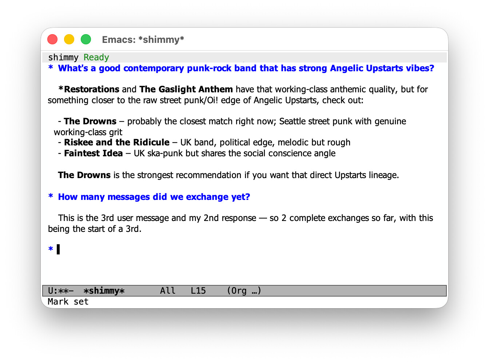
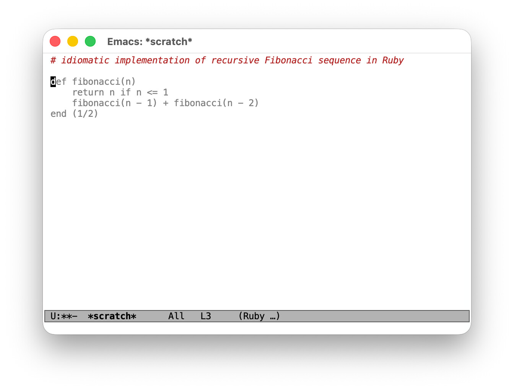
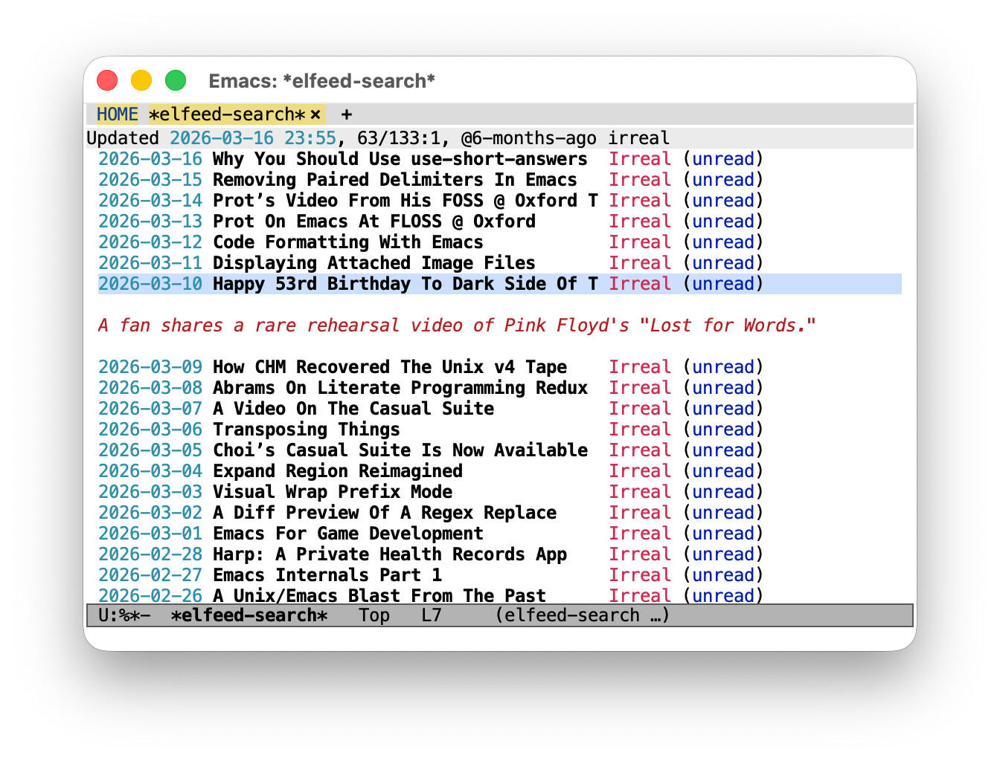

acp2ollama in Emacs for fun and profit
Published 2026-03-19
I recently published acp2ollama, a command-line tool that wraps an ACP agent and exposes it as an Ollama-compatible HTTP server, so any tool that speaks the Ollama API can talk to the agent instead.
This post shows what that looks like in practice in Emacs, where a healthy ecosystem of AI-powered packages supports the Ollama API out of the box. The results are mixed, and the rest of this post picks examples across the spectrum to illustrate.
What acp2ollama does (and doesn't do)
Two fundamental architectural mismatches are worth understanding before we start, because they shape what works well and what doesn't.
Stateful vs. stateless.
The Ollama API is stateless: clients resend the full message history on every request.
ACP agents are stateful: they accumulate context across turns and only receive new messages.
acp2ollama bridges this with a pool of long-lived ACP sessions.
Spawning a new agent session is slow so it pre-warms sessions in the background to ensure new conversations can start immediately.
It also fingerprints incoming message histories to match continuation requests to the session that already holds the right context, so only new messages are forwarded to the agent.
Tool use.
Ollama clients declare available tools in the request and expect the model to ask the client to call them.
ACP agents ship with their own tools and execute them autonomously.
acp2ollama silently ignores incoming tool declarations and never asks to execute tools on the client side.
Use --session-mode to pre-approve operations your agent needs; without it, all permission requests are denied and the agent can't do anything that requires approval.
With that out of the way, let's set everything up so we can take it for a spin!
Setup
Build acp2ollama from source (requires Go 1.24+):
git clone https://github.com/fritzgrabo/acp2ollama
cd acp2ollama
go build -o acp2ollama .
Run acp2ollama --help to see all available options and their defaults.
There are quite a few knobs to tweak: pool sizes, warmup counts, session TTLs, and more.
Getting them right for your specific use case can make a real difference in responsiveness.
For this post, I'll use a fictional ACP agent called shimmy, started with the command shimmy-acp.
Make sure to check your own agent's terms of service before connecting it to a third-party client.
Let's start the server, pointing at our ACP agent:
acp2ollama -- shimmy-acp
This binds to port 11434 by default, so any Ollama client pointing at localhost will find it without further configuration.
Before setting up the Emacs packages below, find out which models your agent provides:
run it directly once, or just start acp2ollama with --log-level debug and check the output: it prints the available models when it pre-warms its first session.
You'll need a valid model name in each of the package configurations that follow.
Works well: chatting in gptel
There's a host of packages in Emacs that allows for chatting with LLMs in distinct conversation buffers.
Check out chatgpt-shell for a package that's dedicated to this usecase, or gptel or ollama-buddy for packages that offer a more generic integration.
Let's give gptel a whirl; connecting it to acp2ollama is straightforward:
(use-package gptel :ensure :config (gptel-make-ollama "shimmy" :host "localhost:11434" :models '(shimmy) :stream t))
Set this as your default backend and model, or select it interactively with M-x gptel-menu.
Because acp2ollama maintains stateful sessions, multi-turn conversations in gptel's chat buffers work as you'd expect: context accumulates across turns, and the agent behaves like it does in its native interface.
Response times are reasonable too, since sessions are reused rather than spawned fresh on every request.

Figure 1: A gptel session buffer showing a conversation with shimmy
Barely works: completion with minuet-ai
minuet-ai provides AI-powered code completion in Emacs.
It supports Ollama, so connecting it to acp2ollama is possible.
The caveats apply in full here, and the result is instructive.
ACP agents are conversational tools, not completion engines.
They're not optimized for the fill-in-the-middle task that code completion requires, and they're slow: where a dedicated completion model might respond in milliseconds, an ACP agent takes seconds.
With minuet-ai's default setting of triggering frequently, the experience is not usable.
The basic setup uses minuet-ai's openai-fim-compatible provider, which maps to acp2ollama's /v1/completions endpoint and returns multiple completion candidates in a single call.
The trick that makes it barely usable is to disable automatic triggering entirely, so completions are only requested when you explicitly ask for them:
(use-package minuet :ensure :config (setq minuet-provider 'openai-fim-compatible) (plist-put minuet-openai-fim-compatible-options :end-point "http://localhost:11434/v1/completions") (plist-put minuet-openai-fim-compatible-options :model "shimmy") (plist-put minuet-openai-fim-compatible-options :name "shimmy") (plist-put minuet-openai-fim-compatible-options :api-key "TERM") ;; Disable automatic triggering; use manual completion only. (setq minuet-auto-suggestion-debounce-delay nil) (define-key minuet-mode-map (kbd "M-TAB") #'minuet-show-suggestion))
With manual triggering, the agent's response time is noticeable, but not disruptive. In practice, though, you'd rather have the right tool. ACP agents are a poor fit for latency-sensitive, high-frequency tasks.

Figure 2: A scratch buffer showing auto-completions via minuet-ai
Works, but probably overkill: elfeed-summarize
elfeed-summarize adds LLM-powered summaries to elfeed, the extensible Emacs RSS reader: a low-frequency, latency-tolerant task, which makes it a reasonable fit for acp2ollama.
The package is built on Andrew Hyatt's llm library, which provides a unified interface to LLM providers, including Ollama.
Connecting is a matter of pointing the llm-ollama provider at the right host and model:
(use-package elfeed-summarize :ensure :after elfeed :config (setq elfeed-summarize-llm-provider (make-llm-ollama :host "localhost" :port 11434 :chat-model "shimmy")) (elfeed-summarize-mode 1))
The setup works without complaint, and the summaries are good.
That said, summarizing RSS entries is a simple task, handled just as well by a local model like llama3 running in a real Ollama instance.
Routing it through shimmy gets the job done, but it's a lot of horsepower for something a lightweight local model does quietly in the background.

Figure 3: An elfeed buffer showing a summary of an RSS item generated via elfeed-summarize
The pattern shown above applies to the many other Emacs packages built on llm: ellama, magit-gptcommit, ekg and others.
If a package exposes an llm-compatible provider setting, swapping in make-llm-ollama pointed at acp2ollama is all it takes.
For simple tasks, though, it's worth asking whether a local model might serve just as well.
Closing thoughts
acp2ollama is experimental, a proof of concept rather than a daily driver: the caveats in its README are real.
For conversational use cases in Emacs, it makes a surprising number of things work with very little configuration and, well, without burning through API tokens.
It's a fresh release and I plan to use it for a while to see what can be improved. I'm curious to see what use cases others run into.
If you try it and have thoughts about what works, what doesn't, I'd love to hear from you.